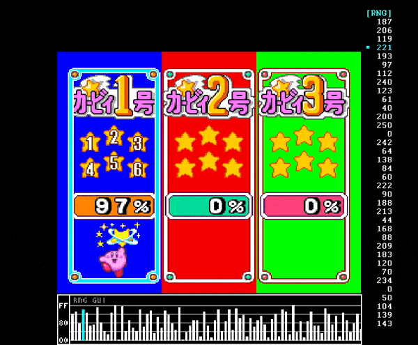
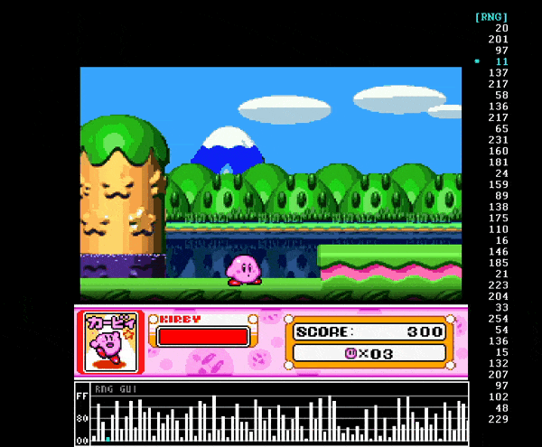
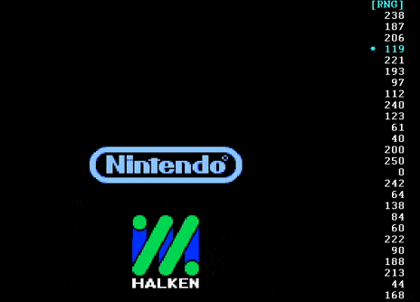
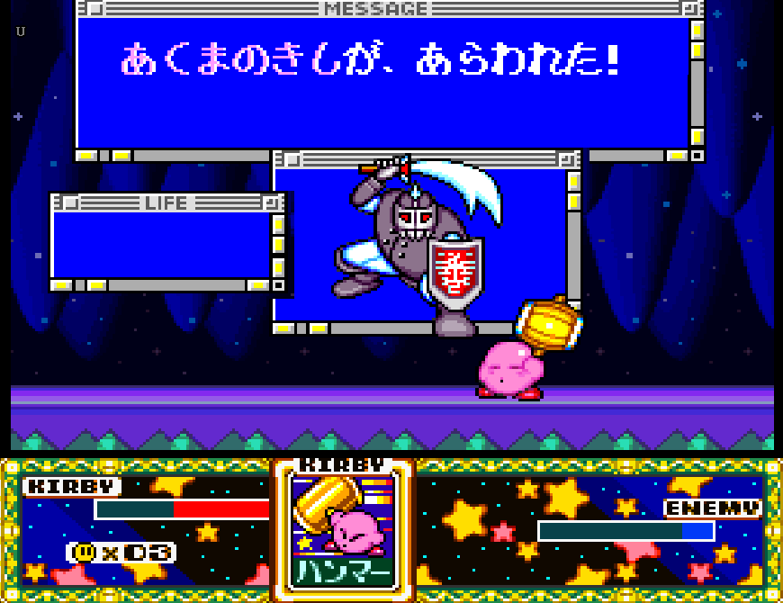
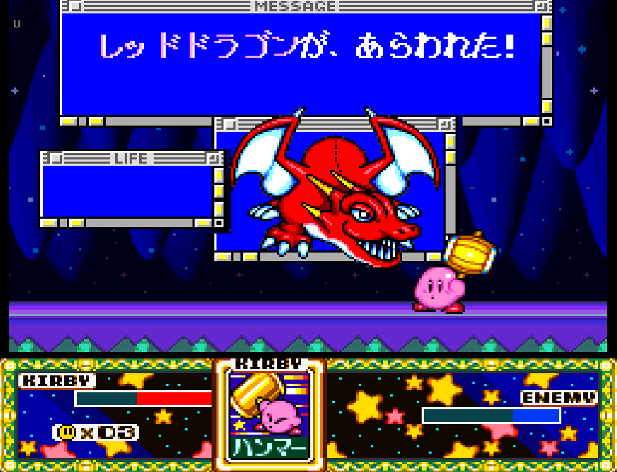
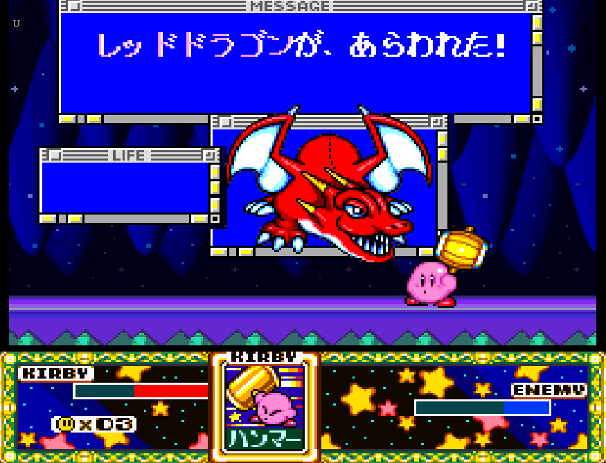

What is this?
This is a calculator that can predict the random actions of the entire Battle Windows fight sequence. This is done by first inputting a number of star directions, which gives the program the information required to find the player's specific RNG point. From this information, the program then simulates the entire Battle Windows sequence to predict every single Battle Windows attack, giving the player the actions needed to manipulate "good" RNG.
With building this calculator, there were these goals in mind:
- Design the calculator to be easy to use and read.
- The calculator cannot waste any time in the run.
- There cannot be any caveats to using the calculator - it should not be a hinderance to use in the run.
- Make setup as easy as possible, and provide the proper tools needed to accomplish that.
- Write a tutorial going over how RNG works and how to use this calculator (you're reading it now!)
I am happy to say that I think I accomplished most, if not all, of these goals. Hopefully this documentation makes it easier to understand how to use this calculator and what it takes to master it.
Report a Bug
If you found a bug, please provide me the following:
- A screenshot of the bug in the program.
- Provide video footage of any gameplay associated with the bug, if necessary
- A screenshot of gameplay can work too, but video is much more desirable.
You can contact me through Discord: minchino, or contact me through any one of my socials.
About RNG
Introduction
Kirby Super Star is a game with several random elements that can slow down the player during speedruns. These elements seem to be out of the users control, as they are "random". In reality, these outcomes are not random, and are in fact completely predictable with the proper foresight.
When the game is started, random numbers are procedurally generated through an arbitrary equation. This essentially pre-generates a set list of numbers, and this is the list that will be used to determine random actions. Knowing what every single number is in the list is not important, as that is the program's purpose. What is important to know is that every number is, and will always be, the exact same.
Kirby Super Star has two values in RAM for RNG. Both of these numbers are 8-bit unsigned integers, which means they can only be in between 0 and 255. The first number is what is used to determine random actions, while the second number is only used to generate the list. The first number is what we will focus on.
When a random action is made, a number in the list is used. Typically, most actions will only use one number. However, there are actions that can skip multiple numbers to make things less predictable. There are also actions that can utilize multiple numbers at once if there is more than one calculation needed.
We are able to view exactly what happens through a useful RNG tool that was made by WaddleDX. This tool lets us see the entire list of numbers in real-time.
For example, we can take a look at when the game first boots. The right side shows the exact RNG numbers that the game will use, while the bottom shows these numbers but as a graph. We will primarily focus on the list on the right side.
When the game is reset, the starting RNG value will always be this specific 119 number, highlighted in blue. This also includes the entire list of values, which will always be the same. The starting number does advance a single time when the file select screen appears, but isn't very important right now, so this will be explained later.
This jumping example shows exactly how RNG is pulled for a random action. When Kirby lands on the ground, the RNG list moves down by two numbers.
There are many actions that will typically only advance RNG by a single number, such as dashing or determining Battle Windows attacks. Star directions are one of many actions that are arbitrarily chosen to advance RNG more than once, as the game seemingly does nothing with the first number, despite skipping it.
When random actions are determined, they will use the number that they end on. This explains the procedure for the above example:
Before Kirby Jumps:
- ...
- 97
- 11
- 137 <-- If the action was not a jump, the list would typically stop here.
- 217 <-- Since Kirby is generating stars, the RNG list will land here instead.
- 58
- ...
After Kirby Jumps:
- ...
- 137 <-- Number has been skipped.
- 217 <-- Number has been used in calculation.
- 58
- 136
- 217
- ...
When Kirby jumps, the game takes the number 217 and uses it in a very simple algorithm. The majority of RNG calculations determine actions if the number is in between two specific numbers in the range of 0 and 255. In this specific example, the star went left because the number is in between 192 and 223.
RNG "Count"
"Count" is a metric that represents a given point for the number of times RNG was advanced since the game was started.
For example, if we were to use the RNG values for when the game was started, 119 would be a count of 0 because RNG was advanced 0 times since the game was started. 221 would be a count of 1, 193 is 2, etc...
Count will reach a maximum value of 65535 and will loop back to 0.
The count value is basically giving us the answer for "how many times have we advanced RNG". This becomes important when we want to manipulate RNG. Rather than trying to find a specific RNG spot out of 65535 numbers, it can be narrowed down to a range of around 300 or so.
Finding Count
Because RNG is entirely predictable, it is very easy to find your current RNG point when provided with enough data.
Our best target is using the previously mentioned stars that Kirby emits when he lands on the ground, or bumps into a wall or ceiling. Because of its predictability, the directions that stars will go are also entirely predictable. By using software, we can find exactly where we are in the RNG list by inputting sequential star directions.
With all of this in mind, we can continue to setting up the RNG tool.
Setup
RNG Program Overview

- Subgame: choose which subgame you are playing
- Min and Max: input minimum and maximum count values
- Slime, Puppet, Magician (or Magician, Knight, Dragon): Difficulty setting
- Inputs: Choose between either 3 or 4 star inputs.
In order to use the main RNG manipulation tool, we need to find an average range of count values to be put into the Min and Max boxes. This is crucial because, like stated before, we do not want to look through a range of 65535 numbers.
Why do we need to find our own range?
Every person plays differently, and how much RNG you advance is dependent on the actions that you take in-game. More RNG advancements ≠ slower movement. The faster you play could be an influence, but it is not definite. Regardless, it is best to find your own range and it doesn't take too long.
Finding Count Range
The best way to calculate range is by using the "Find RNG Count" tool in Tools.
In order to find an approximate range of numbers to choose from, it is best to play through GCO / Halfmoon a few times up to Battle Windows, then calculate what RNG point you end on. Doing this multiple times allows you to find an approximate average that you end up on.
First and foremost, before starting, keep in mind that you should do a buffered title screen skip so no RNG is advanced during that time. On the HALKEN logo, press the B button, then immediately hold Y so that once the "Kirby Super Star" title screen appears, it is skipped on the first frame it can skip (note that this only works on the Japanese version). If you do not do this buffered skip, you will advance RNG for every frame the Kirby Super Star logo is on screen!
After this, start either Great Cave Offensive or Halfmoon, and play up until Battle Windows. Once there, jump 6 times and input the star directions into the Find RNG Count tool. Keep note of what Count appears and do this a few more times until you are satisfied with an average Count number (the more times you do this the merrier).
From this average, you can then determine what your RNG range should be. Note the "Find duplicate RNG points in range" table. You can input a minimum and maximum count, along with how many stars you would like to input in RTA, to see how many duplicate RNG points you have in that range. The less duplicates the better, as having less makes the calculator more accurate.
Using the Calculator
WIP
"Fast" Mode Information
Choosing Fast from the difficulty selector means that you are able to attack right away, but are limited to a 4 frame window, or else the manipulation will fail. This is because the Hammer dust from an up+y attack advances RNG, and using this attack before the enemy lands will create inconsistencies. The timing needs to be precise as to match the calculator's RNG predictions.
In addition to the strict timing, the calculator will be accounting for two instances of a first turn RNG roll instead of one. This is because accounting for only one would make this a two-frame window, which is very tight and not worth doing 30 minutes into a speedrun. The calculator makes sure that if either are landed on, it will give good RNG regardless of which RNG value the user gets.
This, consequently, may cause good RNG to appear less, and thus may require more player input in between each turn. It is highly risk-reward.
Execution
The Hammer attack needs to start on the first four frames the attack will hit the target. This varies across Battle Windows enemies, but ensures that it will be as fast and consistent as possible.
4 frames is the highest this threshold will be because going any higher than this will cause inconsistencies with how abilities spawn once the enemy lands, which can advance none or several random numbers. This is due to the Hammer dust that spawns while charging the attack. It would be very complicated to determine this on the fly and is prone to error, so making the trick tight, but consistent, is the best option.
The best way to determine when it is time to attack is by using the Boss' HP bar in conjunction with other HUD elements as a visual cue. Below are examples of the HP ranges needed for the attack to connect in the first four frames. The left image is the start of the window, and the right image is the end.
For the sake of completeness, the entire gameplay window will be shown, but it is recommended to zoom in to get a better look.
(The rest of the enemies still need to be completed.)
Dark Knight
Starts at around in between the E and the N, and ends near the middle of the E.
Red Dragon
Starts right after the E, and ends in the middle of the white border and the single green pixel.
Dragon is a special exception, as the timing gives 5 frames of leniency instead of 4.
 

日本語ガイド
Nippoからのメモ:
この電卓が英語であることを混乱させて申し訳ない。いつか日本語訳を作ります。
わみちゃんこのガイドを書いてくれてありがとう。
バトルウインドウズの乱数調整方法を特定するツールです。
事前準備
乱数調整をするために、おおよその乱数の範囲を絞る必要があります。
- 画面右、Toolsを選択。
- 最速乱数でハーフムーンへ入場し、実際の通しのようにバトルウインドウズの部屋まで進める。
- バトルウインドウズの部屋に入場したら、ジャンプを6回出し、着地した際に発生した星の向きをFind RNG Countへ入力。
- Results - Predicted RNG Countに数字が表示されるので、数字をメモする。
- これを複数回繰り返す。
使用方法
- Subgame: 使用したい区間に合わせる。銀河に願いをの場合Milky Way Wishesを選択。
- Min Max: 事前準備にて計測したおおよその乱数範囲を入力する。
- Easy Fast: 通常はEasyを選択。Fastについての詳細は割愛。
- Stars: 着地星を数える個数を選択。Starsが3であれば3回ジャンプをして着地星の向きを入力。入力にはテンキーを用いる。
- Result: バトルウインドウズ最短行動のための乱数調整法を表示する。敵が行動を行う前に操作を実行する。
- 以下操作内容:
- Do Nothing - 何もしない
- 1 dash - ダッシュ煙を1回
- 2 dash - ダッシュ煙を2回
- Slide - スライディング
- up+y - 鬼殺し火炎ハンマー
- 操作の隣に表示されるコピーの素で目視乱数サーチ可
- 複数の可能性がある場合はWarningが表示される。キーボードの矢印キーで別の乱数へ切り替える
- 説明が至らないところがあれば随時更新します。